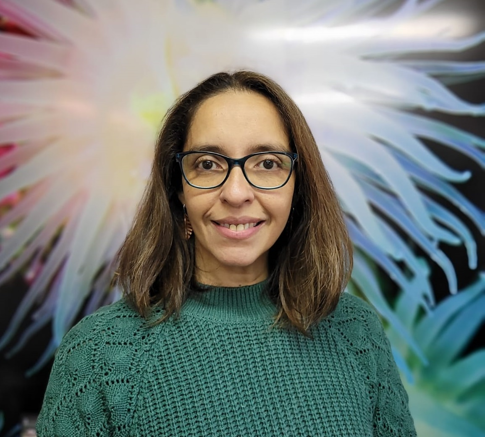
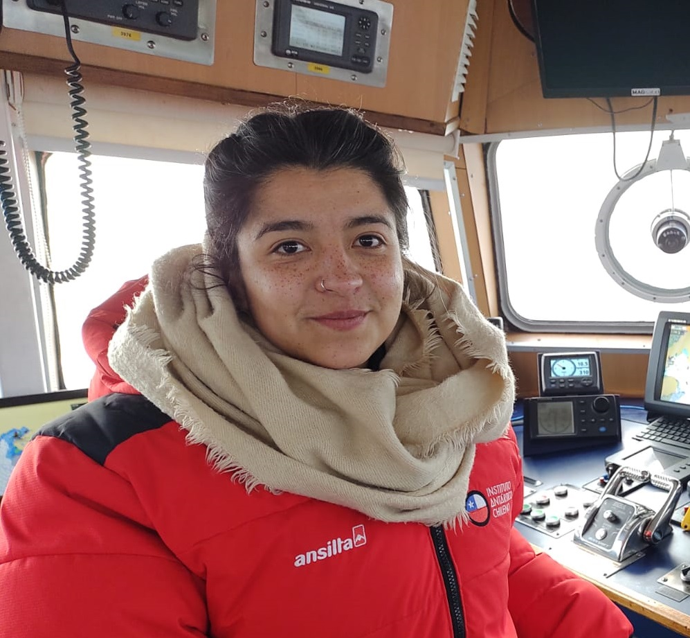
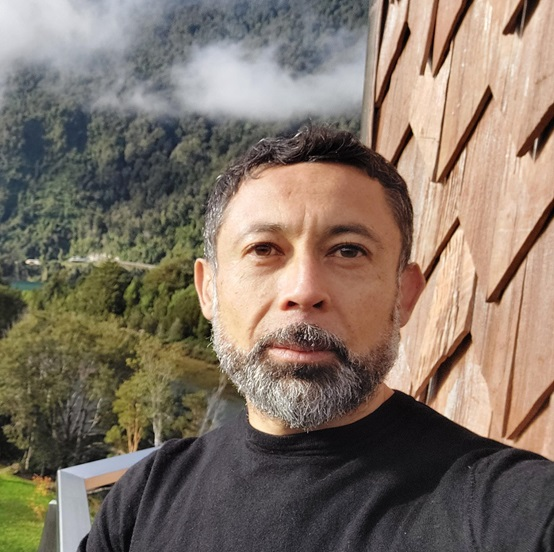
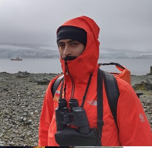
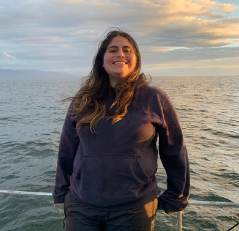

Nuestro equipo

Andrea Piñones
Oceanógrafa PhD. Académica ICML. Investigadora Responsable Proyecto FONDECYT Regular 1210988.
Investigadora asociada centro IDEAL, COPAS Coastal,
Instituto Milenio BASE.

Paula Amador-Véliz
Encargada de Laboratorio y Asistente de Investigación Proyecto Fondecyt Regular 1210988.
Especialista en acoplamiento biofísico en altas latitudes: interacción céano-atmósfera.

David Donoso
Profesor agregado de Oceanografía Física en la PUCV.
Modelador numérico del Océano Austral en Instituto Milenio Base y en Proyecto FONDECYT 1210988.

Octavio Mercado-Peña
Analista de datos oceanográficos para el centro de investigación COPAS COASTAL y LaPAB.
Universidad de Concepción y Universidad Austral de Chile, respectivamente.
Especialista en Olas de Calor y Frío Marinas, acoplamiento océano-atmósfera y biofísico.

Daniela Rojas-Rojas
Analista de datos SIG para el LaPAB proyecto Fondecyt Regular 1210988.
Especialista en teledetección, Macroalgas, Olas de Calor Marinas.
Experiencia de nuestros estudiantes